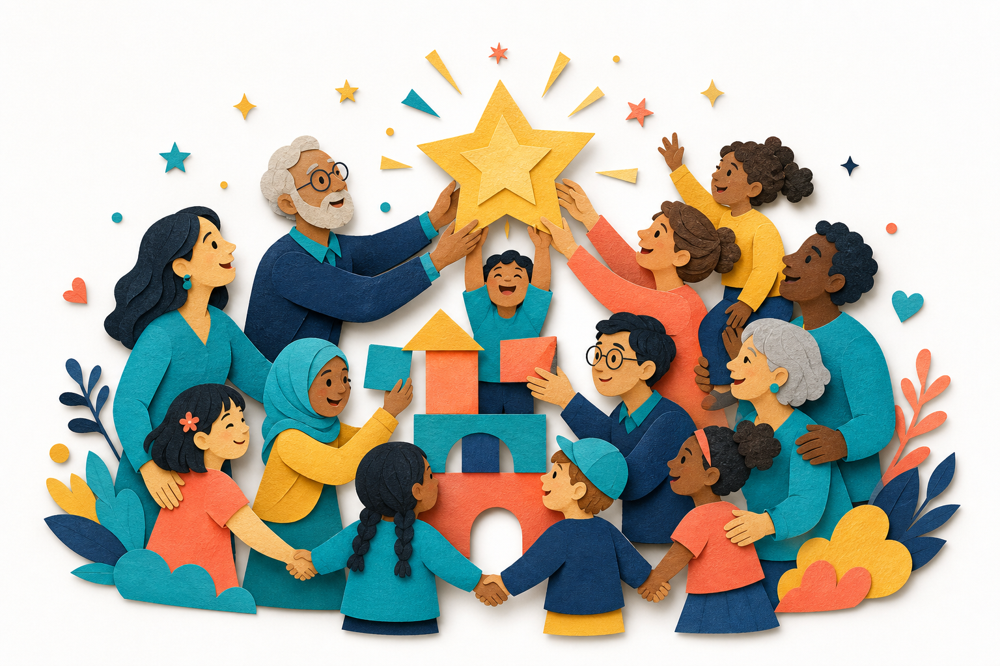

なぜ、私たちがやるのか
直したかったのは、子どもじゃなかった。
創業メンバー自身も、3人の子どもが「グレーゾーン」。ある夜、「なんでできないの」と強く言ってしまったとき、子どもが小さくこぼしました ―「ぼく、ダメな子だから」。直すべきは、子どもではなく、私たちの“見方”の方だったのかもしれません。それが出発点です。
「違い」が「間違い」と
される社会を、変えたい。
矯正ではなく、個性を誇れる場所を。一つのアプリの話ではなく、社会への挑戦です。
通常学級で学習や行動に特性上の困難を抱える子は約8.8%。その多くが診断のないまま「グレーゾーン」と呼ばれ、支援の空白地帯に置かれています。これは、特別な誰かの話ではありません。
出典：8.8%・診断なし割合は「通常の学級に在籍する特別な教育的支援を必要とする児童生徒に関する調査」（文部科学省, 2022）。グレーゾーン人口は当該データに基づく推定値です。
創業メンバー自身も、3人の子どもが「グレーゾーン」。ある夜、「なんでできないの」と強く言ってしまったとき、子どもが小さくこぼしました ―「ぼく、ダメな子だから」。直すべきは、子どもではなく、私たちの“見方”の方だったのかもしれません。それが出発点です。
「違い」が「間違い」と
される社会を、変えたい。
矯正ではなく、個性を誇れる場所を。一つのアプリの話ではなく、社会への挑戦です。
変えたいのは、子どもではなく、社会の見方そのもの。
欠点さがし／叱って直す
才能さがし／ほめて伸ばす
ニューロダイバーシティの才能を解き放ち、誰もが自分らしく輝ける社会を。
「ココロ・カラダ・シャカイ」の3軸で、子と家族を多面的に伴走していく構想です。
困った行動を1行入れると、その場で責めない声かけ案が返る相談機能から。先行βで体験できるのは、この相談機能ひとつだけです。
責めない声かけ案を返す発育AIコーチ。将来は特性の可視化も構想。
相談機能のみ・先行β準備中栄養面から集中力・安定感を支える機能性グミの構想。
構想中創造性が価値になる場。放課後等デイサービスとの連携も視野に。
構想中※ Waku-GUMI・Waku-SPACE は構想段階です。提供内容・時期は変更になる可能性があります。
大きな約束より、確かな一歩を。現在地を正直に共有します。
大きなことでなくて大丈夫。「いいね」と広めてくれることも、立派な一歩です。

SNSでシェアしてください。届けたい家族に、そっと教えてくれるだけで、空白地帯の誰かに届きます。